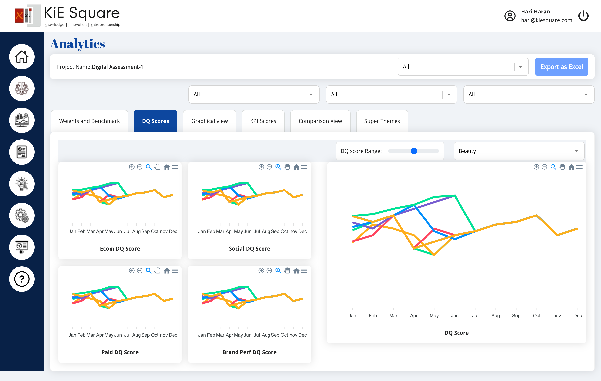

Brand Intelligence
In the race for digital dominance, standing still is not an option. Elevate your brand with our Tools and pave the way for lasting success.
Product Overview:
In today's fast-paced digital landscape, understanding where your brand stands is crucial for success. Our Digital Quotient (DQ) Tool is designed to provide a comprehensive assessment of your brand's digital capabilities, benchmarked against industry standards and your competitors. This tool empowers you to identify strengths, uncover areas for improvement, and create a roadmap for digital excellence.

Unlock your brand's true potential in the digital world. Discover
where you stand and where you can go with the
Digital Quotient Tool.
Key Features
1. Strategic Insight:
Vision Alignment: Ensure your digital strategies are aligned with your business goals. Innovation Index: Measure your investment in cutting-edge technologies and how they contribute to staying ahead of the curve. Customer-Centric Focus: Evaluate how well your digital strategies enhance the customer experience.Measure, benchmark, and accelerate your digital journey—because in today's world, digital maturity is the key to staying ahead.
Why Choose Our Digital Quotient Tool?

Our DQ Tool is not just another digital audit; it's your brand's
pathway to digital excellence. With actionable insights, precise
benchmarking, and a focus on customer-centric strategies, you'll be
equipped to lead in the digital age.